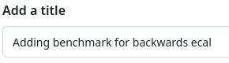
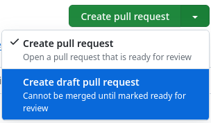
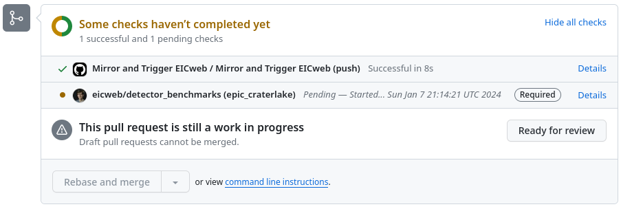
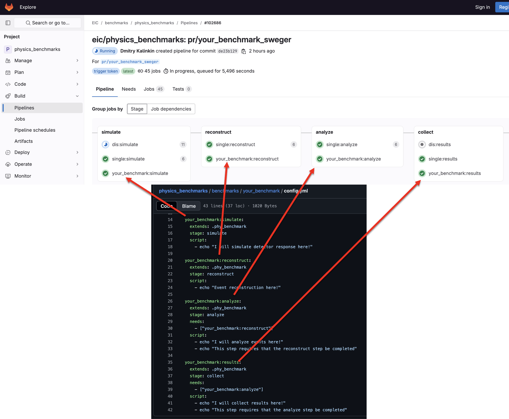
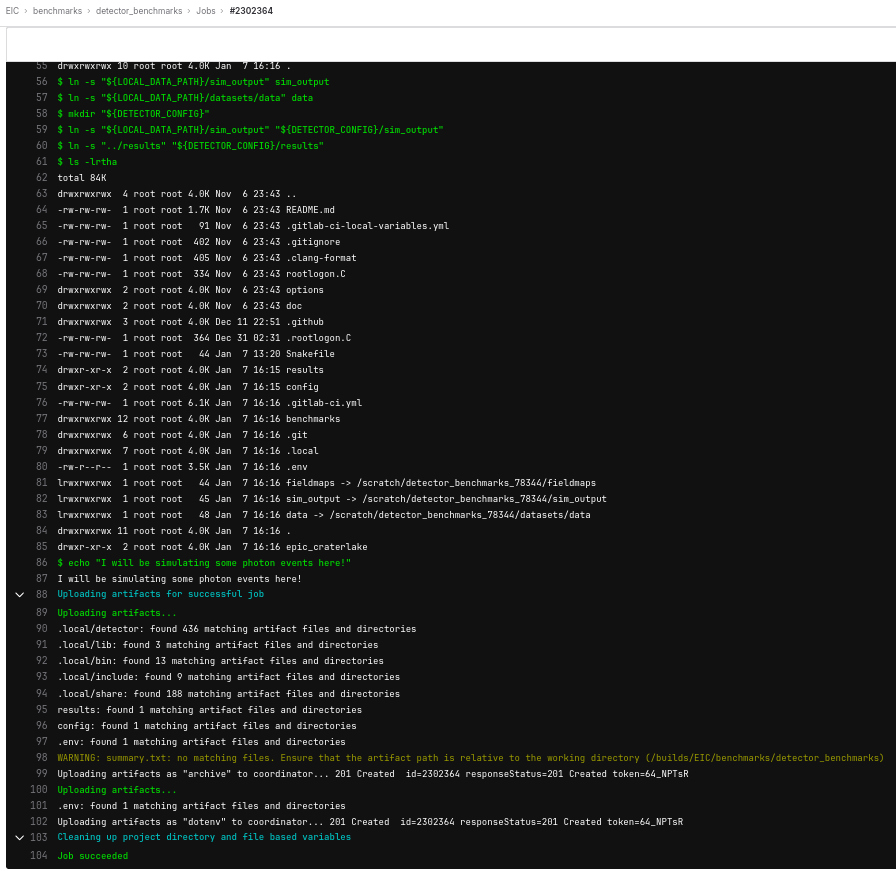

Exercise 2: Setting up your first benchmark with pipelines
Last updated on 2026-07-10 | Edit this page
Overview
Questions
- How do we create a new pipeline with GitLab CI?
Objectives
- Go through the process of contributing benchmarks on GitHub
- Learn basics of running on eicweb GitLab CI
Setting up a repository
Let’s now put our analysis workflow on GitLab’s Continuous Integration (CI) system!
Benchmarks are currently organized into two repositories:
Let’s make a physics benchmark. In the previous lesson, we were
working in the tutorial_directory/starting_script
direcotry. Let’s go back one directory to
tutorial_directory/ and start by cloning the git
repository:
(If you get an error here, you might need to set up your SSH keys.)
Please create a feature branch in your local repository:
(Replace <mylastname> with your last name or
any other nickname.)
Defining GitLab Continuous Integration jobs
Let’s see what kind of bechmarks are available:
OUTPUT
# ls benchmarks
backgrounds benchmarks.json demp diffractive_vm dis dvcs dvmp tcs u_omegaNow, create a new directory for your benchmark
The Continuous Integration system needs to know what steps it has to
execute. This is specified using YAML files. Create a file
benchmarks/your_benchmark/config.yml.
For a physics benchmark, create a config.yml with the
following contents:
YAML
your_benchmark:compile:
extends: .phy_benchmark
stage: compile
script:
- echo "You can compile your code here!"
your_benchmark:simulate:
extends: .phy_benchmark
stage: simulate
script:
- echo "I will simulate detector response here!"
your_benchmark:results:
extends: .phy_benchmark
stage: collect
needs:
- ["your_benchmark:simulate"]
script:
- echo "I will collect results here!"The basic idea here is that we are defining the rules for each step of the pipeline.
A few things to note about the config.yml:
- The rules take basic bash script as input. Anything you would write
in a bash script you can put in the script section of a rule in the
config.ymlfile. - Each rule does not need to do something. In the example
config.ymlgiven here, each rule is just printing a statement. - Each rule corresponds to a stage in GitLab’s pipelines. So the
collect rule in your
config.ymltells the pipeline what to do when it gets to the collect stage of the pipeline.
Since we’ve just created a new file, we need to let git know about it by staging it:
We also need to let the CI system know that we want it to execute
steps that we’ve just defined. For that, it has to be included from the
.gitlab-ci.yml file. Open it in your text editor of choice
and locate lines that look like:
YAML
include:
- local: 'benchmarks/diffractive_vm/config.yml'
- local: 'benchmarks/dis/config.yml'
- local: 'benchmarks/dvmp/config.yml'
- local: 'benchmarks/dvcs/config.yml'
- local: 'benchmarks/tcs/config.yml'
- local: 'benchmarks/u_omega/config.yml'
- local: 'benchmarks/backgrounds/config.yml'Insert an appropriate line for your newly created
benchmarks/your_benchmark/config.yml. We will be doing a
lot of testing using GitLab’s pipelines. We don’t need GitLab to
simulate every other benchmark while we’re still testing ours. To speed
things up, you can comment out most other benchmarks. Consider leaving a
few uncommented to make sure everything is working right:
YAML
include:
#- local: 'benchmarks/diffractive_vm/config.yml'
- local: 'benchmarks/dis/config.yml'
#- local: 'benchmarks/dvmp/config.yml'
#- local: 'benchmarks/dvcs/config.yml'
#- local: 'benchmarks/tcs/config.yml'
#- local: 'benchmarks/u_omega/config.yml'
#- local: 'benchmarks/backgrounds/config.yml'
- local: 'benchmarks/your_benchmark/config.yml'In order to make your benchmark produce artifacts, also add your benchmark to this section, and comment out any benchmarks you commented out above:
YAML
summary:
stage: finish
needs:
#- "diffractive_vm:results"
- "dis:results"
#- "dvcs:results"
#- "tcs:results"
#- "u_omega:results"
#- "backgrounds:results"
- "your_benchmark:results"Save and close the file.
The change that you’ve just made needs to be also staged. We will now learn a cool git trick. Run this:
Here -p stands for --patch. This will
display unstaged changes to the local files and let you review and
optionally stage them. There will be only one change for you to check,
so just type y and press Enter.
Submit a GitHub Pull Request
Even though our benchmark doesn’t do anything yet, let’s submit it to the CI and see it run and do nothing useful. The way to do it is to submit a pull request. We first commit the staged changes to the current branch:
And push that branch from the local repository to the shared
repository on GitHub (referenced to as origin):
(Replace <mylastname> with your last
name.)
- This should instruct you to go to
https://github.com/eic/physics_benchmarks/pull/new/pr/your_benchmark_<mylastname>to create a PR. Follow that link. -

Provide a title like “Adding benchmark for …”. -

Since this work is not yet complete, open dropdown menu of the “Create pull requst” button and select “Create draft pull request” - Click “Draft pull request”
Your newly created Pull Request will show up.
Examine CI output on eicweb GitLab
You can now scroll to the bottom of the page and see what checks are
running. You may need to wait a bit and/or refresh the page to see a
eicweb/physics_benchmarks (epic_craterlake) check
running.

Click “Details”, it will take you to eicweb GitLab instance. The
pipeline will show all the existing jobs. The physics
benchmark pipelines and detector
benchmark pipelines are viewable on eicweb GitLab. You should be
able to see your new jobs. Each stage of the pipeline shown here
corresponds to a rule in the config.yml:

- View this example pipeline.
- All physics benchmark pipelines are here: https://eicweb.phy.anl.gov/EIC/benchmarks/physics_benchmarks/-/pipelines
- All detector benchmark pipelines are here: https://eicweb.phy.anl.gov/EIC/benchmarks/detector_benchmarks/-/pipelines
You can click on individual jobs and see output they produce during running. Our newly created jobs should produce messages in the output. Real scripts could return errors and those would appear as CI failures.

There is another important feature that jobs can produce artifacts. They can be any file. Take a look at this pipeline. Go to the “your_benchmark:results” job, click “Browse” button in the right column, then navigate to “results”, some of the plots from the benchmark are visible here.
Right now, our benchmark will not create these plots. We’ve just set it up to print statements for each job. In the next lesson, we’ll learn how to add everything we need to produce these artifacts to our pipelines!
Conclusion
We’ve practiced contributing code that runs within eicweb Continuous Integration system. Now that we have a good container for our benchmark, in the next lesson we’ll start to fill out that shell to make the benchmark actually run an analysis.
You can view these pipelines here:
- Benchmarks live in the
detector_benchmarksandphysics_benchmarksrepositories - A benchmark is added to GitLab CI by creating a
config.ymland including it from.gitlab-ci.yml - Benchmarks are submitted and tested through GitHub pull requests that trigger eicweb GitLab pipelines